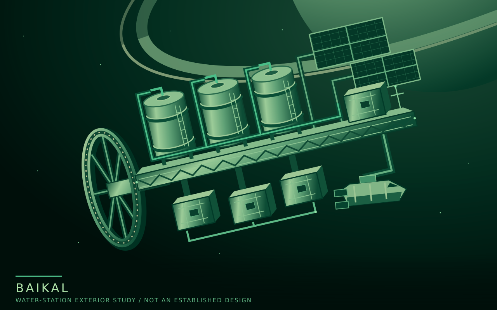

Lore / Baikal
Baikal
| Type | Inhabited water-processing station |
|---|---|
| Region | Saturn's settlement network |
| Operator | Clearwell Waterworks |
| Community | Small permanent resident population |
| Role | Workplace, water supply, and home |
Baikal is a water-processing station operated by the locally founded Clearwell Waterworks. It is the company's principal business and home to a small permanent community.
It is not a station town on the scale of Keystone or Aquila. Its residents live alongside an industrial operation. A problem at the plant is also a problem for the place they call home.
{kind=link}

Water as useful supply
Ice is plentiful in Saturn's rings; usable supply still depends on work. Baikal's value lies in processing, equipment, power, and the transport that connects it to the rest of the settlements. Proximity to ice does not make those services unnecessary.
The plant has a genuine, repairable operational problem. Its operator wants to restore full operation and keep the station working under its own control.
A small permanent home
Baikal is both a place to earn a living and a place where people intend to stay. Those purposes overlap without being the same. Losing the operation would threaten a community, not simply interrupt a commercial service.
The company offers decent working conditions. Its locally founded independence makes Baikal different from an installation administered by a distant Earth parent, but does not remove the pressures of keeping a frontier plant running.
Elena Ward, a co-founder of Clearwell, manages Baikal and lives at the station.
The station is home to Leila Haddad, whose life extends beyond the workship. Other crew, including Jonah Mercer and Tomas Vega, still expect to finish their postings and return to Earth.
Name and working ships
Baikal takes its name from an Earth lake. Clearwell Waterworks names its stations after lakes or seas and its ships after rivers. The community's name is distinct from the employer's: people live at Baikal and work for Clearwell.
Kaveri, Jonah Mercer's workship, handles maintenance, recovery, and small cargo jobs. Ebro is a water hauler. Both are associated with Baikal's working operation; neither is an armed escort.
Details still open
The exact orbit, population, dimensions, layout, residential gravity level, detailed processing equipment, and output remain open. The exterior study explores the station's identity without settling those specifications.